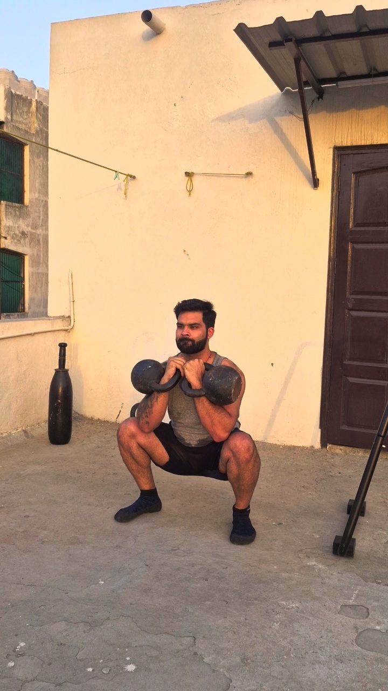
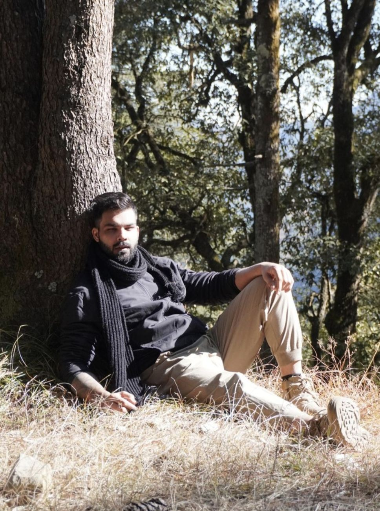
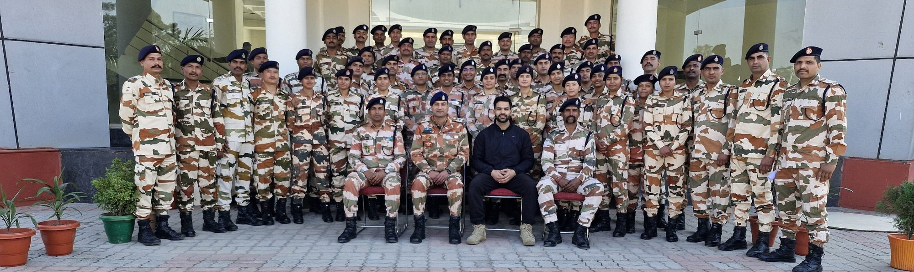
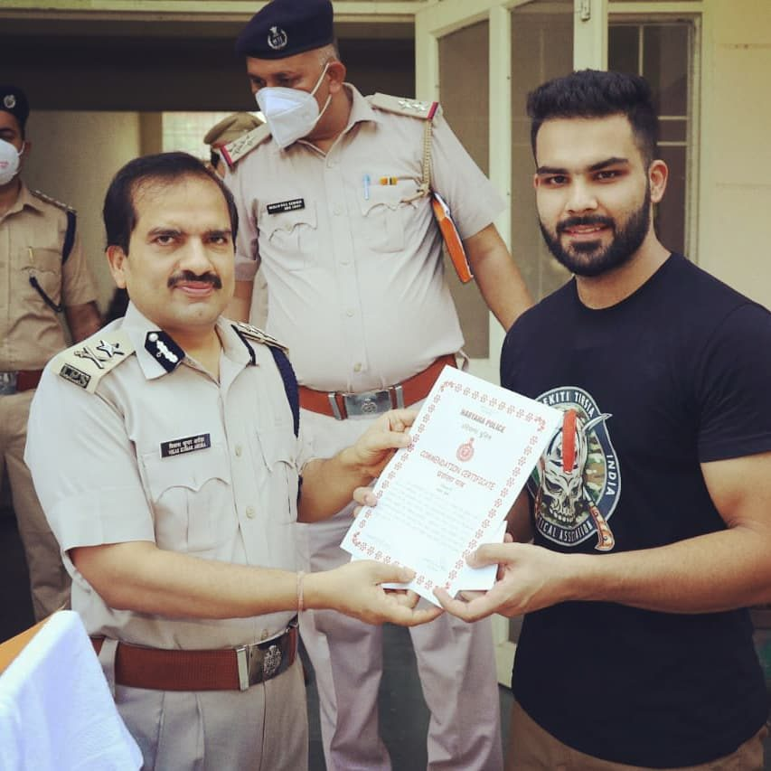

Movement & bodywork coaching · Delhi NCR & online
Feel at home in your body again.
One-to-one coaching that eases the tension you carry, helps you move freely again, and builds strength you can use every day.
A relaxed conversation about your body, with no pressure to commit.
Coaching since 2012 · Internationally certified

What is your body asking for?
More energy. A body that feels easy to live in. Strength you can use every day.
Tap what sounds most like you
I’m tired all the time
Tiredness often has several causes: poor sleep, stress, a body that never gets to rest. We begin by looking at your day, your sleep and how your body is holding up. Then we build small, steady changes in sleep, food and routine. If something needs a doctor, I’ll tell you plainly.
I feel tight and achy
Neck, shoulders, back, hips. Tension builds when you’re busy, stressed or sitting a lot. I start with hands-on work to release what your body is holding, then teach you simple ways to keep it from coming back.
I’m stressed and can’t switch off
When your mind is busy, your body stays on alert too. I help you settle it through hands-on work, slow breathing and gentle practices you can do at home in 10 minutes. It supports a calmer you. It doesn’t replace care for anxiety, if you need that.
I want to feel strong again
Not a punishing gym plan. We build strength slowly and safely, around your body, your schedule and your life, so carrying, lifting and climbing stairs feel easier.
I don’t feel like myself
You don’t need to be fixed. I look at the whole picture with you: your body, energy, routine and what feels hardest right now. Then we choose a first step that fits your life.
My periods, hormones or menopause are affecting me
Your body changes through life, and it can leave you tired, tense, sleeping badly or struggling to stay consistent. I work alongside your doctor on the part I can support: gentle strength, steady routines, sleep and stress. I won’t promise to change a medical condition, and I’ll tell you if something needs a doctor.
Not sure? That’s fine. Most people aren’t. We’ll talk, and I’ll tell you honestly how I can help. Book a free 15-minute call
That’s rarely a lack of effort. Most programmes are built for an average body, and nobody is one.
Stress, poor sleep and a full life show up in the body, and most plans never start there. I do.
No template programmes. No pushing through pain. No pressure, no punishment.
“Instead of pushing me past my comfort zone into burnout, we focused on mobility, strength, breathwork, and meditation, progressing just a little bit at a time.”Smriti, 46
Who this is for. This works best if you’re willing to go steady, not fast. It isn’t a quick fix or medical treatment, and I work alongside your doctor.
Release. Move. Build.
Hands-on work, guided exercise and strength, in the order your body needs. You can enter at any phase. We start where your body is today, not where a plan says it should be.
01ReleaseBefore anything else, we slow down.
The jaw stays tight with nothing to clench it for. You sleep, but you don’t wake rested. Your body has been bracing for so long it has forgotten how to let go.
We begin by listening. Then we use bodywork, breath and rest to help your body soften.
Many people say, “I forgot what it felt like to feel like this.”
02MoveYou start to live in your body again.
Stress finds a home in the shoulders and the gut. We restore the conversation between you and your body, helping you move again, slowly and with attention, to feel how you move, not how it looks.
People often say, “I feel like myself again.”
03BuildStrength that serves your days.
Now we train, with progression. Strength here is not a number on a bar. It is how you move through your day: carrying, lifting, climbing stairs, keeping up.
Many people tell me they can finally lift and carry what they used to avoid.
Alongside every phase: simple guidance on food, sleep and daily routine, so the changes last.
“The body is not a problem to be solved. It is a place to come home to.”
In their own words.
When I started working with Tushar four years ago, weight loss wasn’t my goal—I just wanted to burn off stress, feel stronger, and eventually build the confidence to hike in the mountains without getting exhausted. We started with kickboxing twice a week, taking things slowly with small, manageable moves and zero deadlines. Because it never felt overwhelming, I genuinely started loving the process. … My sleep, which I used to struggle with, improved drastically with nighttime meditation and breathwork. Today, at 40 … I go on mountain treks—even hiking solo—with complete confidence. More than the physical strength or the compliments on my kickboxing, I feel calmer with people, steadier in my mood, and closer to my true self.
At 44, I just wanted to feel good in my body again. I had poor stability, my knees hurt, and I would actually lose my balance and fall while walking on trips. Even lifting a 10 kg cabin bag into an overhead bin felt impossible at 5 feet tall. … I wanted help, but past experiences with aggressive trainers and punishing cardio had left me scared of exercise. Everything changed when I started training with Tushar twice a week. Instead of pushing me past my comfort zone into burnout, we focused on mobility, strength, breathwork, and meditation, progressing just a little bit at a time. Within six months, my energy surged. … Today … I don’t fall anymore, I trek, I easily swing a 16 kg kettlebell, and I lift my own heavy luggage effortlessly. … More than the physical transformation, my mindset shifted. I feel energized, joyful, and clear-headed—and for the first time in my life, I actually crave working out.
I was irregular with exercise. Could never keep a fixed routine. What I found about Tushar is that he had a holistic approach and first made a professional assessment of the state of my fitness. He then put together a program which was suited to me. I had regular pain in the upper back which made it hard to carry any weight. Since I started it has made a huge difference. I can carry on long hours without any trouble and pick up heavy bags which I earlier avoided. I look forward to my routine with him every morning. I feel lively and energetic all day.
I began personal training with Tushar after six months of delivering my baby boy. At that point, I was overweight … and severely sleep-deprived. Tushar’s personalized strength training program was the ideal solution for my physical and mental well-being. His knowledge of postpartum exercises helped me deal with various bodily aches and pains, while giving me strength to shed the kilos. I have lost 10 kilos but more than that, I’m the fittest I’ve ever been and can’t imagine a life without exercise.
When I started training with Tushar last September I was feeling low on strength and had constant pain in the neck and back. Being 66 years old I was a bit worried about ever regaining my strength. With Tushar’s excellent guidance, patience and our hard work together, there has been a complete turnaround. He goes according to my pace but at the same time actively brings in variations of incremental intensity. Now I train virtually as I don’t live in Delhi. I had misgivings that it won’t be as good, but it’s going great. It’s never too late to start. I recommend Tushar wholeheartedly as a trainer and a fitness mentor.
Tushar is, undoubtedly, the best fitness trainer out there. He has deep understanding of the human anatomy and his workout regime is focused towards improving form and building strength. He has changed my perception about fitness and has helped me in achieving my weight loss goals in a more sustainable way. In the six months that I trained with him, no two days were the same and each session had something new to learn.
I’ve never been a very physically active person… and had settled into a rhythm of what I felt was comfortable. One of those limits or beliefs I had was not being able to do a pull-up. Tushar was systematic and progressive in his approach and he taught me how to activate certain neuro-muscular connections and built up my ability to do one, two, three and now five, all on my own. He is able to use his deep and holistic knowledge of the body and fitness to move your belief in what you think you can achieve. Truly transformative.
As a golfer, I was prone to injuries. After doing my evaluation, we worked on my posture, flexibility and strengthening, especially related to golf. As he gradually raised my levels, I too gained in confidence. The credit for the extra yardage at the golf course goes to sir.
He started systematically with a professional evaluation and then adjusted the program according to my needs. He gradually raised the bar, and my ability and confidence to meet these higher standards has grown consistently. Most importantly he constantly adjusts and calibrates the program to tackle different needs, ensuring that I eagerly look forward to my sessions with him.
I’ve seen great results over the past few months. Workable around my schedule, constantly increasing in difficulty and scope, and focused to match my fitness goals. Tushar tailors workouts to fit your desired results but definitely pushes you to do as much as you can. I’ve seen improved cardio and body composition. Highly recommended.
Shared with permission and shortened. Results vary from person to person. This work supports your wellbeing and is not a medical treatment.

How it works.
What the first 12 weeks often look like
Weeks 1–2 Your assessment, a plan built around you, and a first short daily practice.
Weeks 3–6 Many people notice easier breathing, less tightness and better rest first.
Weeks 7–12 Strength starts to build. Lifting, carrying and climbing stairs feel easier.
Everyone is different. We adjust as we go, and we review together at 3 months.
What I need from you: a short daily practice, honest updates, and 24 hours’ notice to reschedule.
The Method Programme.
Three months, designed around you. Release, Move and Build in one practice, shaped to your body and your week.
Online is structured one-to-one coaching, from anywhere. Hybrid is for people in Delhi NCR who want hands-on bodywork alongside coaching.
Online
- Live 1:1 sessions, 45 to 60 minutes each
- A short daily practice video, 10 to 20 minutes
- Nutrition and lifestyle guidance, built around your routine
- Your programme redesigned every 4 weeks
See everything included
- A video assessment in week 1 (60 to 75 minutes) and a review at 3 months
- A simple food and sleep log you share with me
- Video form review, with a reply within 1 to 2 working days
- WhatsApp support on weekdays
Hybrid
- Everything in Online
- In-person sessions at your home, bodywork and training
- Your first assessment done in person
- Live video sessions in between
See everything included
- Daily practice videos, nutrition and lifestyle guidance, form review and WhatsApp support
- Your programme redesigned every 4 weeks
- Travel within your usual Delhi NCR areas included. Longer distances are extra
The exact rhythm of your sessions, and your final price, are confirmed with you after your assessment.
Bodywork sessions
Single sessions at your home in Delhi NCR, with no programme needed.
See the bodywork pagePayment by UPI, bank transfer, or card. We arrange payment on WhatsApp, in full or in two instalments (half to start, half at the start of month 2). Prices include all fees.
I work with a small number of people at a time. If there are no spots, you’ll be added to a waitlist.

Trusted by people from every walk of life, including India’s elite units.
Since 2012, I’ve trained everyday people and elite units. The same trained eye that reads how a soldier moves will read how your body is holding on.


Tushar Bhatia
I’m Tushar. A bike accident broke my leg and stopped everything. I had spent years as a strength coach, pushing my own body and other people’s. Lying in bed with nowhere to go, I started reading and learning about how the body and mind work together.
I began to see the body as something intelligent, not a machine. I learned yoga and Ayurveda, practised breath, mantra and stillness, and applied all of it to my own body. My life started to turn around.
What changed most was what I let go of. I stopped believing that more effort always means more results. I started resting, breathing, stretching and moving without a plan. Today, when so many of us are trying to do too much, I help people come back to themselves, through bodywork, movement and strength. Everything I’ve learned since 2012 is in how I work with you.
Credentials and experience
Physical Conditioning & Movement
- Certified Personal Trainer (ACE, Gold’s Gym, SPEFL-SC, EREPS Level-4)
- Specialist qualifications in Senior Fitness (ACE), Kettlebell Training (EKFA Level 1 & 2), and Exercise Physiology (IOC)
- Extensive background in martial arts and combatives (Kalaripayattu 1st Dan Black Belt, Pekiti Tirsia Kali, Kickboxing)
- Designed and executed tactical strength & conditioning programs for units including ITBP, Haryana SWAT, Para-17, and NSG SWS Group
- Corporate & events: worked with KPMG, American Express, Accenture, IBM, SmartCube, GE Power India, Devils Circuit, and others
Bodywork & Therapeutic Modalities
- Certified Ayurvedic Massage Therapist (Way To Anandamaya, Kerala)
- Certified Thai Foot Reflexologist (Mark Perren Jones Spa Training Academy)
- Advanced practice in Marma (Varmam) therapy, myofascial soft-tissue release, cupping, joint mobilization, and breathwork
Before you begin.
Online or in person, which should I choose?
Online suits you if you are comfortable on video and want flexibility. Hybrid suits you if you want hands-on bodywork alongside coaching.
How much does it cost?
Online programmes start from ₹18,000 a month and Hybrid from ₹30,000 a month, over 12 weeks. Each programme is designed around you, so your exact plan and price are confirmed after your assessment. Single bodywork sessions start from ₹4,000.
Do you give diet plans?
I give nutrition and lifestyle guidance: simple habits around food, hydration, sleep and your daily rhythm. I don’t prescribe medical diets. If you have a medical condition, I work alongside your doctor or dietitian.
How much time does it take each day?
About 10 to 20 minutes of practice, plus your regular session.
What if I miss a session?
Tell me 24 hours before and we will reschedule within the same week or the next.
Where should I start?
Book the free 15-minute call. We talk about what is going on in your body and what you have tried, and we decide together. If you only want bodywork, single sessions are available.
Is bodywork a regular spa massage?
No. It is attentive bodywork that follows what your body is holding, using stretching, breath and movement.
Do I need to undress for bodywork?
No. Flowing Energy Release is fully clothed with no oil. For oil-based sessions, strict draping keeps you covered, and you can ask me to adjust, pause or stop at any time.
Will it be painful?
It should not be. We work within your comfort. If an area feels too intense, tell me and I will adjust.
I have an injury or a medical condition. Can I still work with you?
Often yes. Tell me on the call. I may ask for your doctor’s guidance first, and I will say plainly if something is outside my work.
Can you help with PCOS, thyroid or menopause?
I don’t treat any medical condition. Many women with these conditions work with me alongside their doctor. We focus on strength, steadier energy, better sleep and a routine that suits how you feel. I’ll ask for your doctor’s guidance first where it matters.
What do I need for a home visit?
A quiet room with open floor space. I bring everything else.
Can I train online if I live outside Delhi?
Yes. Many clients do, and the practice plan is the same.
How soon will I notice a change?
It varies. Many people feel ease and better rest first. Strength builds over weeks.
How do payment and rescheduling work?
You can pay by UPI, bank transfer, or card. We arrange the payment on WhatsApp, in full or in two instalments. Please give 24 hours’ notice to reschedule.
Start with a free 15-minute call.
A real conversation about what is going on in your body and what you have tried.
No pitch. No pressure. Just clarity.
Workshops for teams, events and units.
Each engagement is designed for the group. I have worked with KPMG, American Express, Accenture, IBM and GE Power India, and with tactical units. Pricing is on enquiry.
Half-day and full-day workshops · Strength and conditioning for tactical and paramilitary units · Corporate wellness programmes · Mentorship for practitioners
The cool down and mindful session you run in the end seriously is a mid-week bonanza to let go of all the stress and recharge us for the rest of the week.
You taught us with so much patience and dedication, I felt I was in your studio learning in person. The circuits and intensity were very adequately planned for all.
Thank you for the killer session. I feel my whole body has worked. Appreciate the modifications.